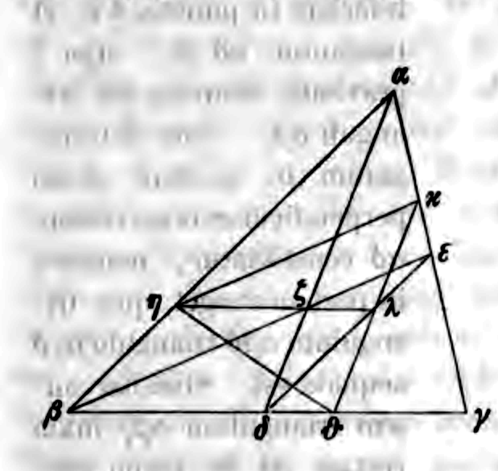

Center of Gravity and Proposition 1: Triangle Medians¶
Synagoge Book VIII, Chapter 5 & Proposition 1 (Hultsch III, pp. 1030–1038) · Critical English Edition
5. What the heavy and the light are, and what is the cause of the upward and downward motion of bodies, and what notion “up” and “down” convey and by what boundaries they are defined, need not be stated by us at present, since these matters have been made clear in the mathematical writings by Ptolemy; but what the center of gravity of each body is and what it signifies, which is the principle and element of the centrobaric treatise, from which the remaining parts of mechanics also depend, must be stated; for from this, I think, the remaining things studied in the treatise will also be clear. We say that the center of gravity of each body is a certain point lying within it, from which if the weight be conceived as suspended, it remains at rest while borne and preserves its original orientation [without turning over in its motion]. And this point is found to belong not only to regularly shaped bodies, but also to irregularly shaped ones, being investigated by some such method as this.
6. (I) Let a vertical plane ΑΒΓΔ be assumed inclining toward the center of the universe, toward which all heavy bodies also seem to have their downward tendency, and let the straight line ΑΒ be parallel to the plane on which we stand. Now if any heavy body be placed along the straight line ΑΒ so as to be completely cut by the plane when produced, it will at some time have such a position as to remain unturned and not fall off. This being done, if the plane ΑΒΓΔ be conceived as produced, it will cut the body lying upon it into two equiponderant parts, balancing as it were about the plane as a support. Again, when the weight is moved so as to touch the straight line ΑΒ at another part, turning over, it will at some time have a position so as to remain when released and not fall off. If then the plane ΑΒΓΔ be again conceived as produced, into
f. 0041 · p. 1032equiponderant parts it will cut the weight and will meet the plane that formerly cut the same weight into equiponderant parts; for if it does not meet it, the same parts will become both equiponderant and non-equiponderant to one another, which is absurd.
7. (II) These things having been stated beforehand, let a straight line ΑΒ again be conceived perpendicular to the plane on which we stand, clearly inclining toward the center of the universe, and let the weight likewise be placed upon the point Α, using the straight line ΑΒ as a support [so that it will stand at the point Α so as to remain, if indeed the weight was also able to rest on the plane passing through it]. Now if, while it remains, the straight line ΑΒ be produced, some part of it will be intercepted inside the underlying figure. Let this part be conceived as remaining, and again let the weight be placed upon the straight line at another part so as to be at rest; I say that the straight line ΑΒ when produced will meet the part previously intercepted. For if it will not meet it, certain planes produced through both of them will be able not to meet one another inside the figure, and each of them [applied to the plane through ΑΒ] will divide the weight into the same parts being both equiponderant and non-equiponderant, which is absurd; therefore the aforesaid straight lines will meet inside the figure. And likewise, if the weight be placed in other positions at point Α so as to remain, ΑΒ when produced will meet the straight lines [likewise] previously intercepted. Whence it is evident that the straight lines conceived in the aforesaid manner will cut one another at a single point; and this point is called the center of gravity. And it is evident that the weight, when conceived as suspended from the center, will not turn over, but will remain preserving any original position during its motion; for all planes produced through it divide the weight into equiponderant parts, so that it admits no cause of turning over [the parts on either side of the point being equiponderant in every position].
f. 0043 · p. 10348. This, then, would be the chief principle holding together the centrobaric treatise; and you may learn the elementary propositions demonstrated through this by reading Archimedes's On Equilibria and Hero's Mechanics; while what is not familiar to the many I will write down in order, such as the following.
9. (III) Let there be a triangle ΑΒΓ, and let its sides be cut in the same ratio at points Η, Θ, Κ, so that as ΑΗ is to ΗΒ, so ΒΘ is to ΘΓ and ΓΚ to ΚΑ, and let ΗΘ, ΘΚ, ΚΗ be joined; that the triangle ΑΒΓ and the triangle ΗΘΚ have the same center of gravity.
For let ΒΓ and ΓΑ be bisected at Δ and Ε, and let ΑΔ and ΒΕ be joined; therefore Ζ is the center of gravity of triangle ΑΒΓ. For if the triangle be set upon a vertical plane along ΑΔ, it will incline to neither side because triangle ΑΒΔ equals triangle ΑΓΔ. And likewise if triangle ΑΒΓ be set on the vertical plane along ΒΕ, it will incline to neither side because triangles ΑΒΕ and ΒΓΕ are equal. And if the triangle balances along each of ΑΔ and ΒΕ, their common point Ζ will be its center of gravity. [We must conceive Ζ, as stated before, as lying in the middle of triangle ΑΒΓ, which is clearly assumed uniform in thickness and weight.] And it is evident that
f. 0045 · p. 1036ΑΖ is double ΖΔ, and ΒΖ is double ΖΕ, and that as ΓΑ is to ΑΕ, so ΑΒ is to ΔΕ and ΒΖ to ΖΕ and ΑΖ to ΖΔ, because triangles ΔΖΕ, ΑΒΖ and ΓΔΕ, ΑΒΓ are equiangular. Let ΔΕ be joined and cut ΘΚ at Λ. Since the ratio of ΒΘ to ΘΓ is compounded of that of ΘΒ to ΔΘ and that of ΔΘ to ΘΓ, and componendo as ΒΓ is to ΓΘ, so ΓΑ to ΑΚ, halves of the antecedents give ΓΔ to ΓΘ as ΕΑ to ΑΚ, and convertendo ΓΔ to ΔΘ as ΑΕ to ΕΚ; now ΓΔ equals ΒΔ and ΑΕ equals ΓΕ, so as ΒΔ is to ΔΘ, so ΓΕ is to ΕΚ; hence componendo as ΒΘ is to ΘΔ, so ΓΚ is to ΚΕ; therefore the ratio of ΑΗ to ΗΒ is compounded of that of ΓΚ to ΚΕ and that of ΔΘ to ΘΓ. And the ratio of ΔΛ to ΛΕ is compounded of the same [and ΘΛ equals ΛΚ, as will be shown]; therefore as ΑΗ is to ΗΒ, so ΔΛ is to ΛΕ. And ΑΒ and ΔΕ are parallel, and the joins ΑΔ and ΒΕ cut each other at Ζ; therefore the line through Η, Ζ, Λ is straight; for this too follows next [if it is brief]. And since as ΒΖ is
f. 0047 · p. 1038to ΖΕ, so ΗΖ is to ΖΛ, and ΒΖ is double ΖΕ, therefore ΗΖ is also double ΖΛ. Now ΗΛ bisects triangle ΗΘΚ, and ΗΖ is double ΖΛ; therefore Ζ is the center of gravity of triangle ΗΘΚ. And it was also that of ΑΒΓ.
Archival Plate (Hultsch Vol. III, p. 1036 / folio 0045)¶

